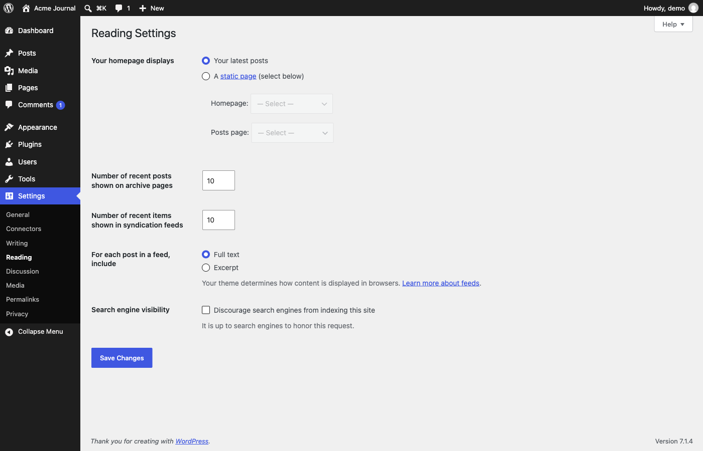

Screen spec · p028
Reading Settings
Controls what visitors see: whether the homepage shows the latest posts or a fixed page, how many posts appear per archive page and per feed, whether feeds carry full text or excerpts, and whether search engines are asked not to index the site.

View 1 capture →Spec items
| ID | Type | Spec | Condition | Evidence | Confidence | Notes |
|---|---|---|---|---|---|---|
SPEC-p028-01 | Display | "Your homepage displays" is set to "Your latest posts". | On this demo site | init | Verified | |
SPEC-p028-02 | Visibility | The "Homepage:" and "Posts page:" selects are greyed out and show "— Select —". | While "Your latest posts" is selected | init | Verified | |
SPEC-p028-03 | Action | Choosing "A static page (select below)" probably enables the "Homepage:" and "Posts page:" selects. | When the second radio is chosen | - | Inferred | The radio was not changed |
SPEC-p028-04 | Input | The page selects offer "About", "Contact", "Pricing", "Privacy Policy Draft" and "Sample Page". | On this demo site | - | Verified | Option list from the crawl record; the page "Privacy Policy" offered on p032 is missing here |
SPEC-p028-05 | Display | "Number of recent posts shown on archive pages" and "Number of recent items shown in syndication feeds" are both 10. | On this demo site | init | Verified | |
SPEC-p028-06 | Display | "For each post in a feed, include" is set to "Full text", with "Excerpt" as the alternative. | On this demo site | init | Verified | |
SPEC-p028-07 | Display | "Discourage search engines from indexing this site" is unticked, and the note below says "It is up to search engines to honor this request." | On this demo site | init | Verified | |
SPEC-p028-08 | Action | Pressing "Save Changes" probably posts the whole form and stores every field on the screen at once. | When the button is pressed | - | Inferred | Not pressed during the crawl |
About this screen
Purpose
Decides the shape of the public site's front page and feeds, and holds the single switch that hides the site from search engines while it is being prepared.
Shown when
Shown to a logged-in user who can manage site options (the capture was taken as the user "demo"); other roles were not captured, so they probably do not see the Settings menu.
Who uses it and how
The administrator sets this when the site structure is decided, for example when switching from a blog-style front page to a fixed landing page, and again at launch to check search engine visibility. Reached from the "Settings" submenu in the side menu; the sibling settings screens are p025 General Settings, p026 Connectors, p027 Writing Settings, p028 Reading Settings, p029 Discussion Settings, p030 Media Settings, p031 Permalink Settings and p032 Privacy Settings.
Main features
- Homepage mode: latest posts or a static page
- Selection of the homepage and the posts page
- Posts per archive page
- Items per syndication feed
- Full text or excerpt in feeds
- Search engine visibility switch
UI elements and behavior
| Element | Behavior | Notes |
|---|---|---|
| Radio group "Your homepage displays" | Switches between "Your latest posts" and "A static page (select below)". | The words "static page" are a link, probably to documentation |
| "Homepage:" / "Posts page:" selects | List the site's pages; disabled in the capture. | |
| Number fields for archive pages and feeds | Small numeric inputs, both holding 10. | |
| Radio group "For each post in a feed, include" | "Full text" or "Excerpt". | Link "Learn more about feeds" beside it was not clicked |
| Checkbox "Discourage search engines from indexing this site" | Asks search engines not to index the site. | Unticked |
| "Save Changes" button | Probably saves the form. | Not pressed during the crawl |
Input fields
| Field | Type | Required | Assumed validation | Notes |
|---|---|---|---|---|
| Your homepage displays | radio | No | One of two options | "Your latest posts" selected |
| Homepage: | select | No | A published page; probably must differ from the posts page | Disabled unless a static page is chosen |
| Posts page: | select | No | A published page; probably must differ from the homepage | Disabled unless a static page is chosen |
| Number of recent posts shown on archive pages | number | No | Probably a whole number of 1 or more | 10 |
| Number of recent items shown in syndication feeds | number | No | Probably a whole number of 1 or more | 10 |
| For each post in a feed, include | radio | No | "Full text" or "Excerpt" | "Full text" selected |
| Discourage search engines from indexing this site | checkbox | No | None | Unticked |
Usage flow
- Open "Settings" → "Reading".
- Choose whether the homepage shows the latest posts or a static page; for a static page, pick the homepage and the posts page.
- Adjust the number of posts per page and per feed, and the feed content.
- Tick or untick the search engine checkbox as appropriate for the site's stage.
- Press "Save Changes".
Navigation
| Trigger | Goes to | Notes |
|---|---|---|
| Side menu "Writing" | p027 Writing Settings | Target taken from the link address in the crawl record; the link was not clicked |
| Side menu "Discussion" | p029 Discussion Settings | Target taken from the link address in the crawl record; the link was not clicked |
| Side menu "Pages" (to create a page to use as homepage) | p008 Pages | Target taken from the link address in the crawl record; the link was not clicked |
Variants and business rules
States and variants
Captured with "Your latest posts" selected, so the page selects are disabled. The static-page state, the warning that may appear when the same page is chosen twice, and the notice after saving were not captured.
Business rules and constraints
The search engine setting is a request, not a block, as the screen itself states. The page selects appear to list only some of the site's pages, so a page probably has to be published (and not already assigned as the privacy policy page) to be offered.
Open questions
- Why is "Privacy Policy" offered on p032 but not in the page selects here?
- Is a warning shown elsewhere in the admin while search engines are discouraged?
- What limits apply to the two number fields?
Auto-extracted data (headings, links, buttons, tables, click decisions)
Headings
- H1: Reading Settings
Tables
| Caption | Headers | Rows |
|---|---|---|
| Your homepage displays | 5 |
Internal links
| Text | URL | Notes |
|---|---|---|
| Skip to main content | http://localhost:8899/wp-admin/options-reading.php#wpbody-content | |
| Skip to toolbar | http://localhost:8899/wp-admin/options-reading.php#wp-toolbar | |
| Dashboard | http://localhost:8899/wp-admin/index.php | |
| Home | http://localhost:8899/wp-admin/index.php | |
| Updates | http://localhost:8899/wp-admin/update-core.php | |
| Posts | http://localhost:8899/wp-admin/edit.php | |
| All Posts | http://localhost:8899/wp-admin/edit.php | |
| Add Post | http://localhost:8899/wp-admin/post-new.php | Excluded pattern: post-new\.php |
| Categories | http://localhost:8899/wp-admin/edit-tags.php?taxonomy=category | |
| Tags | http://localhost:8899/wp-admin/edit-tags.php?taxonomy=post_tag | |
| Media | http://localhost:8899/wp-admin/upload.php | |
| Library | http://localhost:8899/wp-admin/upload.php | |
| Add Media File | http://localhost:8899/wp-admin/media-new.php | |
| Pages | http://localhost:8899/wp-admin/edit.php?post_type=page | |
| All Pages | http://localhost:8899/wp-admin/edit.php?post_type=page | |
| Add Page | http://localhost:8899/wp-admin/post-new.php?post_type=page | Excluded pattern: post-new\.php |
| Comments 1 1 Comment in moderation | http://localhost:8899/wp-admin/edit-comments.php | |
| Appearance | http://localhost:8899/wp-admin/themes.php | |
| Themes | http://localhost:8899/wp-admin/themes.php | |
| Editor | http://localhost:8899/wp-admin/site-editor.php | |
| Fonts | http://localhost:8899/wp-admin/font-library.php | |
| Plugins | http://localhost:8899/wp-admin/plugins.php | |
| Installed Plugins | http://localhost:8899/wp-admin/plugins.php | |
| Add Plugin | http://localhost:8899/wp-admin/plugin-install.php | |
| Users | http://localhost:8899/wp-admin/users.php | |
| All Users | http://localhost:8899/wp-admin/users.php | |
| Add User | http://localhost:8899/wp-admin/user-new.php | |
| Profile | http://localhost:8899/wp-admin/profile.php | |
| Tools | http://localhost:8899/wp-admin/tools.php | |
| Available Tools | http://localhost:8899/wp-admin/tools.php | |
| Import | http://localhost:8899/wp-admin/import.php | |
| Export | http://localhost:8899/wp-admin/export.php | |
| Site Health 2 | http://localhost:8899/wp-admin/site-health.php | |
| Export Personal Data | http://localhost:8899/wp-admin/export-personal-data.php | Risky URL keyword: export |
| Erase Personal Data | http://localhost:8899/wp-admin/erase-personal-data.php | |
| Theme File Editor | http://localhost:8899/wp-admin/theme-editor.php | |
| Plugin File Editor | http://localhost:8899/wp-admin/plugin-editor.php | |
| Settings | http://localhost:8899/wp-admin/options-general.php | |
| General | http://localhost:8899/wp-admin/options-general.php | |
| Connectors | http://localhost:8899/wp-admin/options-connectors.php | |
| Writing | http://localhost:8899/wp-admin/options-writing.php | |
| Reading | http://localhost:8899/wp-admin/options-reading.php | |
| Discussion | http://localhost:8899/wp-admin/options-discussion.php | |
| Media | http://localhost:8899/wp-admin/options-media.php | |
| Permalinks | http://localhost:8899/wp-admin/options-permalink.php | |
| Privacy | http://localhost:8899/wp-admin/options-privacy.php | |
| Menu | http://localhost:8899/wp-admin/options-reading.php# | |
| About WordPress | http://localhost:8899/wp-admin/about.php | |
| About WordPress | http://localhost:8899/wp-admin/about.php | |
| Get Involved | http://localhost:8899/wp-admin/contribute.php | |
| ⌘K Open command palette | http://localhost:8899/wp-admin/options-reading.php# | |
| 1 1 Comment in moderation | http://localhost:8899/wp-admin/edit-comments.php | |
| New | http://localhost:8899/wp-admin/post-new.php | Excluded pattern: post-new\.php |
| Post | http://localhost:8899/wp-admin/post-new.php | Excluded pattern: post-new\.php |
| Media | http://localhost:8899/wp-admin/media-new.php | |
| Page | http://localhost:8899/wp-admin/post-new.php?post_type=page | Excluded pattern: post-new\.php |
| User | http://localhost:8899/wp-admin/user-new.php | |
| Howdy, demo | http://localhost:8899/wp-admin/profile.php | |
| demoEdit Profile | http://localhost:8899/wp-admin/profile.php | |
| Overview | http://localhost:8899/wp-admin/options-reading.php#tab-panel-overview | |
| Search engine visibility | http://localhost:8899/wp-admin/options-reading.php#tab-panel-site-visibility | |
| Pages | http://localhost:8899/wp-admin/post-new.php?post_type=page | Excluded pattern: post-new\.php |
| static page | http://localhost:8899/wp-admin/edit.php?post_type=page |
External links
| Text | URL |
|---|---|
| WordPress.org | https://wordpress.org/ |
| Documentation | https://wordpress.org/documentation/ |
| Learn WordPress | https://learn.wordpress.org/ |
| Support | https://wordpress.org/support/forums/ |
| Feedback | https://wordpress.org/support/forum/requests-and-feedback |
| Acme Journal | http://localhost:8899/ |
| Visit Site | http://localhost:8899/ |
| Log Out | http://localhost:8899/wp-login.php?action=logout&_wpnonce=3c75f1926c |
| Documentation on Reading Settings | https://wordpress.org/documentation/article/settings-reading-screen/ |
| Support forums | https://wordpress.org/support/forums/ |
| Learn more about feeds | https://developer.wordpress.org/advanced-administration/wordpress/feeds/ |
| Learn more about feeds | https://developer.wordpress.org/advanced-administration/wordpress/feeds/ |
| WordPress | https://wordpress.org/ |
| Please log in again. | http://localhost:8899/wp-login.php |
Safety decision for clickable elements
| Element | Type | Decision | Reason | Selector |
|---|---|---|---|---|
| Skip to main content | a | Skip | Not clicked (pages are opened by URL) | |
| Skip to toolbar | a | Skip | Not clicked (pages are opened by URL) | |
| Collapse Menu | button | Skip | Not clicked (pages are opened by URL) | |
| ⌘K Open command palette | menuitem | Skip | Not clicked (pages are opened by URL) | |
| Help | button | Skip | Not clicked (pages are opened by URL) | |
| Save Changes | input | Skip | Blocked keyword: save |
Body text (start)
Skip to main content Skip to toolbar Dashboard Home Updates Posts All Posts Add Post Categories Tags Media Library Add Media File Pages All Pages Add Page Comments 1 1 Comment in moderation Appearance Themes Editor Fonts Plugins Installed Plugins Add Plugin Users All Users Add User Profile Tools Available Tools Import Export Site Health 2 Export Personal Data Erase Personal Data Theme File Editor Plugin File Editor Settings General Connectors Writing Reading Discussion Media Permalinks Privacy Collapse Menu About WordPress Acme Journal ⌘K Open command palette 1 1 Comment in moderation New Howdy, demo Help Reading Settings Your homepage displays Your homepage displays Your latest posts A static page (select below) Homepage: — Select — About Contact Pricing Privacy Policy Draft Sample Page Posts page: — Select — About Contact Pricing Privacy Policy Draft Sample Page Number of recent posts shown on archive pages Number of recent items shown in syndication feeds For each post in a feed, include For each post in a feed, include Full text Excerpt Your theme determines how content is displayed in browsers. Learn more about feeds. Search engine visibility Search engine visibility Discourage search engines from indexing this site It is up to search engines to honor this request. Thank you for creating with WordPress. Version 7.1.4